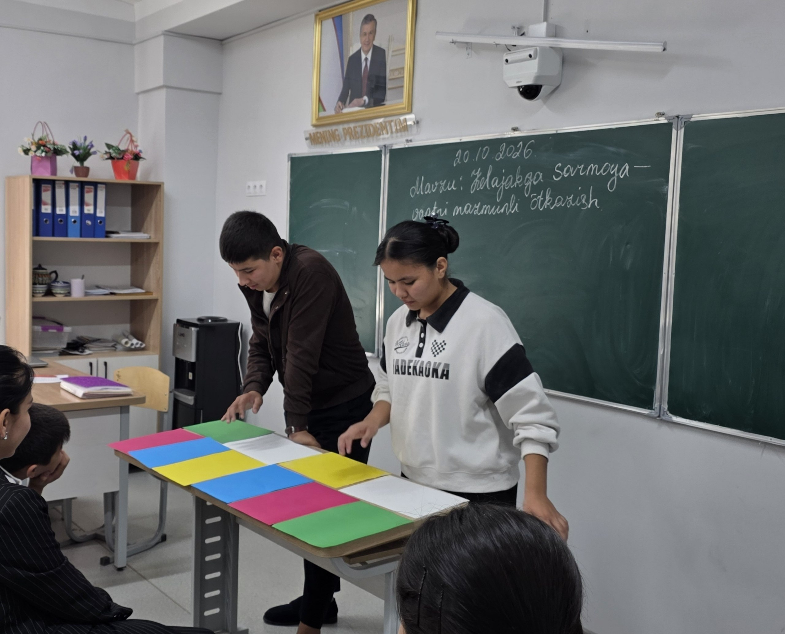
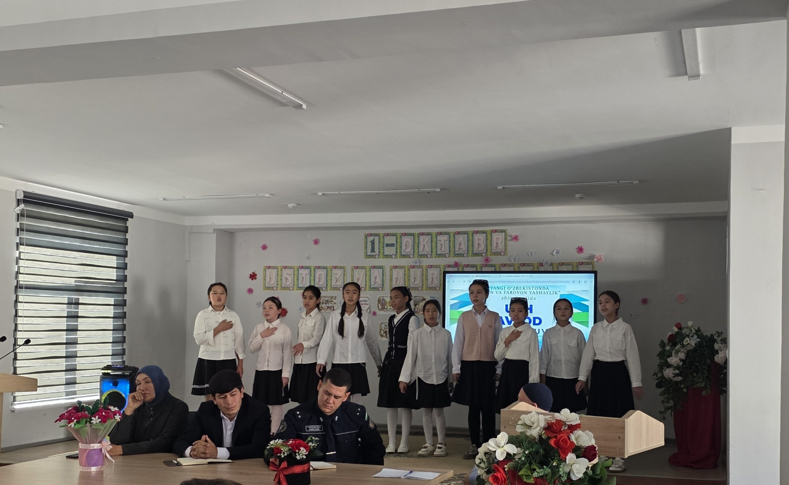
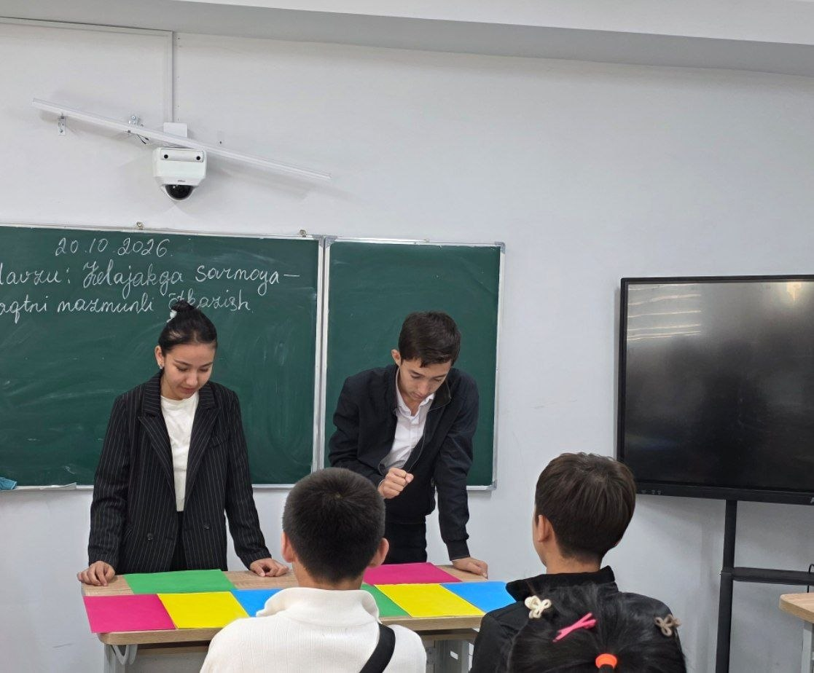

Bektemir Tumani | Ta'lim Koordinatori Sardorligi Nomzodi
Bektemir Tumani | Ta'lim Koordinatori Sardorligi Nomzodi
Ta'lim Kelajagi: Yangi G'oyalar, Hamkorlik va Sun'iy Intellekt
Maktablararo raqobatdan — do'stona hamkorlikka, iste'doddan — yuksak marralarga. Toshkent shahar Bektemir tumani yoshlar ta'lim tizimini transformatsiya qilish strategiyasi.
Abdukarimova Muborak
348-maktab Ta'lim Koordinatori Sardori
«Biz sun'iy intellektni boshqaramiz, u bizni emas!»
Nazariya Emas — Real Natijalar
348-maktabda o'tgan bir yil davomida shakllantirilgan, o'quvchilar hayotida bevosita o'zgarish yasagan tajriba modeli.
Interaktiv Debatlar
O'quvchilarda jamoat oldida erkin so'zlash, mulohaza yuritish va mustaqil tanqidiy fikrlash madaniyati tizimli shakllantirildi.
Iqtidor Diagnostikasi
Passiv va tortinchoq o'quvchilar bilan individual yondashuv suhbatlari o'tkazilib, ularning yashirin qobiliyatlari kashf qilindi.
Innovatsion Taqdimotlar
Standart quruq doskadan qochib, raqamli media, dizayn va vizual taqdimotlar tanlovlari orqali g'oyalar namoyish etildi.
O'zaro Ishonch Muhiti
Sinf sardorlari o'rtasida sog'lom ko'prik va o'zaro tajriba almashish tizimi yo'lga qo'yilib, birdamlik maydoni yaratildi.
Biz Qilgan Ishlar
348-maktabda o'tkazilgan darslar, debatlar va yangi usuldagi mashg'ulotlardan namunalar.

Interaktiv Dars & Debatlar
O'quvchilar faol qatnashgan, texnologiyalar bilan boyitilgan zamonaviy dars.

Qulay O'quv Muhiti
Yorqin, qulay va o'quvchilar uchun ilhomlantiruvchi sinf xonasi muhiti.

Innovatsion Taqdimotlar
Vizual materiallar va amaliy mashqlar orqali o'tkazilgan jonli mashg'ulot.
Agar Men Bektemir Tumani Sardori Bo'lsam...
Eski byurokratik maktab idorasidan zamonaviy sinergik ta'lim ekotizimiga qat'iy o'tish rejasi.
Yakkalangan Maktablar va Formalizm
- closeMaktablar o'z qobig'iga o'ralib qolgan, o'quvchilar bir-biriga raqibdek qarashadi.
- closeTadbirlar faqat yuqoriga rasmiy hisobot topshirish va qog'oz to'ldirish uchun o'tkaziladi.
- closeFaqat 4-5 nafar doimiy faol o'quvchi sahnaga chiqadi, qolgan yoshlar chetda qoladi.
- closeTexnologiyalar va sun'iy intellekt taqiqlanadigan yoki qo'rqiladigan narsa sifatida ko'riladi.
O'quvchilarda motivatsiya so'nishi va yoshlar salohiyatining ochilmay qolishi.
Bektemir Ta'lim Klasteri & Sinergiya
- check_circleMaktablar Klasteri: Tuman maktablari birlashadi, boy laboratoriya va resurslar o'zaro almashiladi.
- check_circleJonli Natijalar: Qog'oz hisobotlar o'rniga yoshlarning amaliy loyihalari va startaplari qo'llab-quvvatlanadi.
- check_circleOmmaviy Qamrov: Har bir o'quvchining ichidagi yashirin qobiliyat aniqlanib, mos yo'nalishga yo'naltiriladi.
- check_circleKelajak Ko'nikmalari: AI, raqamli media va shaxsiy brend vositalari yoshlar xizmatiga qo'yiladi.
Bektemir yoshlari Toshkent miqyosida eng ilg'or, innovatsion va do'stona jamoaga aylanadi.
Creative Essence: San'at, Mahorat va Biznes
Qizlarning sevimli mashg'ulotlarini kamsitmagan holda, ularni zamonaviy monetizatsiya, shaxsiy brend va xalqaro estetik darajaga olib chiqish.
 Gastro-San'at
Gastro-San'at
MasterChef Bektemir
Qandolatchilik, pazandachilik va estetik dasturxon san'ati bo'yicha maktablararo do'stona bellashuvlar. Sog'lom ovqatlanish madaniyati va gigiyena qoidalari.
 Eko-Dizayn
Eko-Dizayn
Eco-Art & Upcycling
Qayta ishlangan matolar va materiallardan milliy tusdagi eko-shoperlar, aksessuarlar va kiyimlar yaratish. Tabiatni asrash va zamonaviy uslub uyg'unligi.
 Liderlik
Liderlik
Shaxsiy Brend va Notiqlik
Qizlarning o'z ijod mahsulotlarini internetda namoyish etishi uchun vizual storytelling, mobilografiya, kamera qarshisida dadil gapirish darslari.
Gamerlikdan — Yaratuvchilikka
O'yinlarga bo'lgan kuchli ishtiyoqni bekorga sarflamasdan, uni tuman miqyosidagi IT va muhandislik salohiyatiga yo'naltirish.
GameDev & Hackathon
CS yoki PUBG da shunchaki vaqt o'tkazish emas! Roblox Studio, Scratch va Python orqali o'z o'yin loyihalarini yaratish hakatonlari. O'yinchi emas — dasturchi bo'l!
Robo-Jang & Apparatlar
Maktablararo avtomatlashtirilgan robotlar ligasi. Arduino mikrokontrollerlari, datchiklar va elektron sxemalar bilan ishlash bo'yicha ochiq amaliy ustaxonalar.
Cyber-Strategiya & Taktika
Kiber-musobaqalarni shunchaki o'yin emas, balki qat'iy rejalashtirish, jamoaviy kommunikatsiya, tezkor tahlil va mantiqiy fikrlash platformasiga aylantirish.
Bektemir Maktablari — Yagona Jamoa
Maktablarni bir-biri bilan urushtiradigan soxta reytinglar o'rniga, sinergik 3-bosqichli do'stlik ko'prigi.
Mini-Taqdimotlar Haftaligi
Har haftada bitta maktab vakillari ikkinchi maktabga do'stona mehmonga boradi. O'zining eng muvaffaqiyatli darsi, startapi yoki sevimli loyihasini tengdoshlariga taqdim etadi.
Aralash Jamoalar Bellashuvi
Tanlovlarda maktablar bir-biriga raqib qilib qo'yilmaydi! Turli maktablarning o'quvchilaridan tuzilgan yangi sinergik aralash jamoalar umumiy muammolarga birgalikda yechim izlaydi.
Yangi G'oyalar Festivali
Tuman hokimligi va tadbirkorlar ishtirokida yil yakunida katta innovatsion forum o'tkaziladi. Yoshlarning amaliy g'oyalariga haqiqiy homiylar va investitsiyalar jalb qilinadi.
4 Yangi Tuman Dasturi
Ta'lim faqat darslik bilan cheklanmaydi — har bir qiziqish uchun maxsus amaliy platforma.
Peer-to-Peer Mentorlik
Katta sinfdagi bilimdon o'quvchilar kichik sinflarga xorijiy tillar, aniq fanlar va IT bo'yicha norasmiy, erkin va do'stona muhitda murabbiylik qiladi.
Bektemir Idea-Bank
Har bir o'quvchi o'z maktabi va tumani rivoji uchun yangi taklif va g'oyalarini yuborishi mumkin bo'lgan ochiq onlayn telegram-bot va ovoz berish portali.
Yashil Innovatsiya
Maktab hovlilarida tomchilatib sug'oriladigan aqlli botanika maydonchalari va yoshlar tomonidan parvarishlanadigan zamonaviy yashil oazislar barpo etish.
Spikerlar Klubi (Bektemir Talks)
TEDx formatidagi tuman o'quvchilari minbari: yoshlarning jasur g'oyalari, muvaffaqiyatsizliklardan olingan saboqlar va jamiyatga foydali fikrlar maydoni.
«Biz sun'iy intellektni boshqaramiz, u bizni emas!»
Sun'iy intellekt inson aqlini cheklamasligi, aksincha uning yaratuvchanligini o'n barobarga oshirishi zarur.
Algoritmlarni Bo'ysundirish
ChatGPT, Claude, Midjourney kabi vositalardan vazifalarni ko'r-ko'rona ko'chirish yoki dangasalik uchun emas, balki murakkab ilmiy maqolalarni daqiqalar ichida tahlil qilish, yangi g'oyalarni generatsiya qilish va dasturlashni tez o'rganish uchun samarali qurol sifatida foydalanish.
Insoniy Qadriyatlar Ustuvorligi
Hech qanday sun'iy ong insoniy mehr, samimiylik, empatiya, axloq va jamoaviy ishonch o'rnini bosa olmaydi. Biz texnologiyani rivojlantirar ekanmiz, qalbimizdagi ma'naviyat, do'stlik va o'zaro hurmatni har doim birinchi o'ringa qo'yamiz.
Mening 90 Kunlik Yo'l Xaritam
Saylovdan keyingi har bir kun aniq maqsad va o'lchanadigan natijalar bilan belgilangan.
1 – 30 Kun: Tashkiliy Asos & Birlashuv
1-OYTuman maktablarining ta'lim sardorlari bilan uchrashuvlar, konsultatsiyalar va yagona "Bektemir Yoshlar Klasteri" ishchi guruhini shakllantirish. Har bir maktabdagi muammo va ehtiyojlar xaritasini to'liq shakllantirish.
31 – 60 Kun: Amaliy Start & Sinov
2-OYQizlar va o'g'il bolalar uchun dastlabki tuman miqyosidagi mahorat darslari (MasterChef, GameDev, Debat klubi) va mini-musobaqalarni ishga tushirish. Spikerlar klubining ilk ochiq efirini o'tkazish.
61 – 90 Kun: Festival & Natijalar
3-OYMaktablararo yangi g'oyalar festivalini o'tkazish, eng faol va tashabbuskor o'quvchilarni tuman darajasida taqdirlash. Tuman hokimligi va jamoatchilikka amalga oshirilgan ishlarning ilk ochiq shaffof hisobotini berish.
«Bektemir yoshlari nafaqat bilim oluvchilar, balki butun shahar uchun namuna bo'ladigan yangilik yaratuvchilardir!»
Men, Abdukarimova Muborak, o'z tajribam, kuch-g'ayratim va amaliy dasturim bilan har bir o'quvchining ovozini eshitishga, uning orzularini ro'yobga chiqarishga va tumanimiz ta'limini poytaxtda birinchi o'ringa olib chiqishga tayyorman.